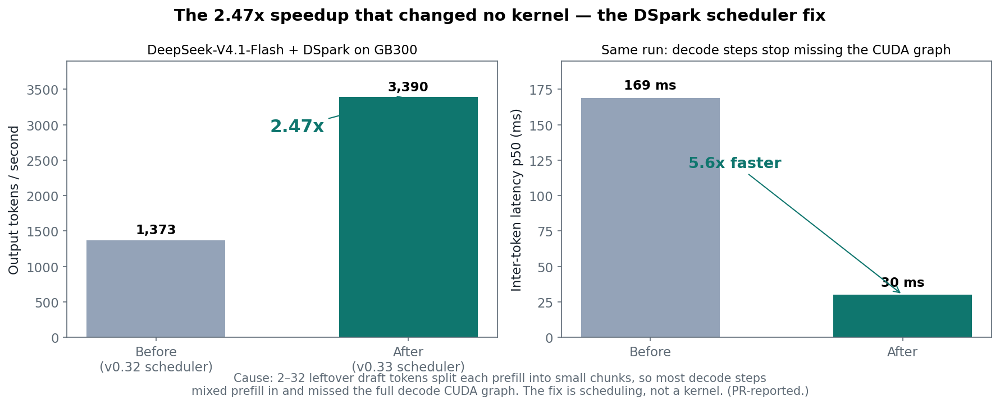
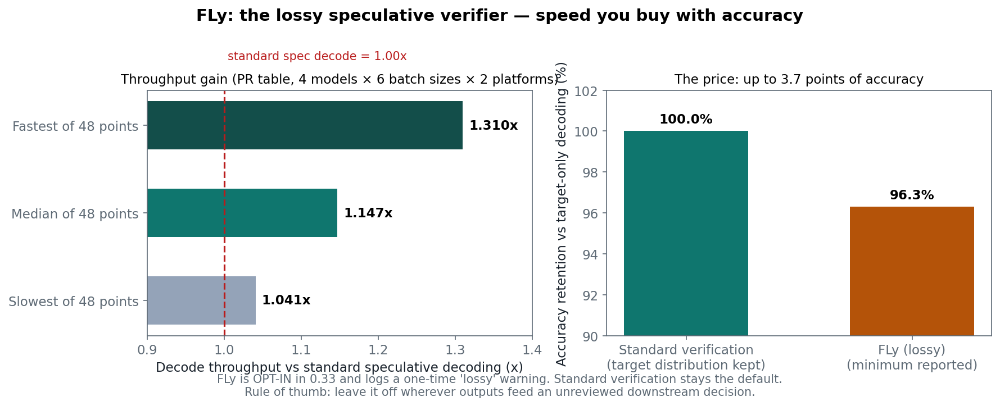
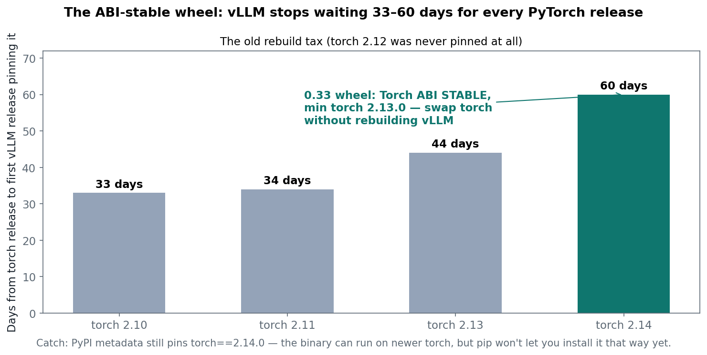
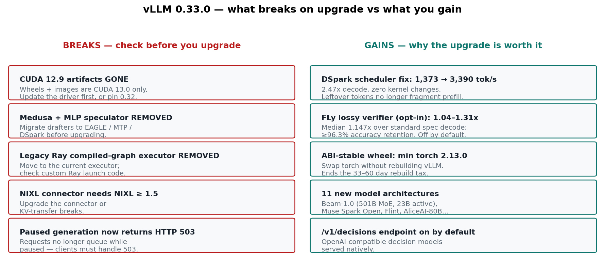

vLLM 0.33.0 shipped on November 2, 2026 — 927 commits from 389 contributors — and the headline is not a model. It is a platform break: the wheels and Docker images are CUDA 13.0 only, PyTorch moves to 2.14.0, and three things your deployment may depend on are deleted outright. Upgrade blind and your server does not start, your speculator config errors out, or your KV-transfer connector refuses to connect.
And yet the biggest free speedup in the release changed no kernel at all. A scheduler accounting fix took one speculative-decoding setup from 1,373 to 3,390 output tokens per second — a 2.47x jump — because a handful of leftover tokens was keeping every decode step off the fast path. That is the story of this release in one number: 0.33 is less about new speed than about removing the things that were quietly capping the speed you already had.
This is post #1 of a 25-post series on the Google AI stack — vLLM serving first, then JAX/Keras/Gemma, Google's Agent Development Kit, and Vertex AI — written for the Google Developer Expert AI track. One concept per post, concrete numbers, a runnable notebook. Today: what 0.33 actually changes, why Model Runner V2 is the engine underneath all of it, and the upgrade checklist that keeps your fleet serving.
The ELI5 version
vLLM is the kitchen that serves your language model to the world. Requests come in like orders, the GPU cooks tokens, and the engine's job is to keep the kitchen busy without letting any one order block the rest.
Three upgrades to that kitchen land in 0.33:
The power supply changes (CUDA 13). The kitchen now runs on a new electrical standard. The old plugs — CUDA 12.9 wheels and images — are simply not manufactured anymore. If your machine's driver cannot speak CUDA 13, the new kitchen does not turn on. This is the one breaking change that hits literally every CUDA user.
The head chef's system becomes the only system (Model Runner V2). Model Runner V2 is the redesigned execution engine that has been rolling out since 0.29 — batch-sharded sampling, CUDA-graph memory profiling that sizes the KV cache automatically, and speculative decoding built into the runner instead of bolted on. In 0.32 it became the default on ROCm too, removing the last platform exceptions. In 0.33 there is no old engine left to fall back to: every new feature in this release — the scheduler fix, the lossy verifier, the draft-model changes — is a Model Runner V2 feature. If you are upgrading, you are running V2, full stop.
The menu loses three dishes (the removals). Medusa and the MLP speculator are deleted, the legacy Ray compiled-graph executor is deleted, and the NIXL connector now demands NIXL 1.5 or newer. None of these is a deprecation warning you can ignore for one more release — they are gone, and configs referencing them fail.
How it works: the four changes that matter
1. The platform baseline: CUDA 13 only, PyTorch 2.14
The new baseline is PyTorch 2.14.0, torchvision 0.29.0, Triton 3.8.0, and CUDA 13.0 — for wheels, Docker images, and the default ROCm image moving to ROCm 10.0 (7.2 is still published under a -rocm72 tag). The CUDA 12.9 artifacts are discontinued, not deprecated. Practically: update your NVIDIA driver to one that supports CUDA 13 before upgrading, and install vLLM in its own environment — a shared environment with PyTorch 2.15 installed will get downgraded by the torch==2.14.0 pin, and that is a real way to break a second project while fixing the first.
2. The scheduler fix: 1,373 → 3,390 tokens a second, no kernel changed
This is the most instructive change in the release, and it is pure scheduling. In speculative decoding, a small draft model proposes tokens and the big model verifies them. On the main branch, 2 to 32 leftover draft tokens kept splitting each new prefill into small chunks, so most decode steps mixed prefill into the batch — and a mixed batch cannot take the full decode CUDA graph. The inter-token latency p50 sat at 169 ms.
The 0.33 scheduler change stops drafters from reserving token-budget slots they do not use, so the leftover tokens stop fragmenting the batch. Same model, same hardware (DeepSeek-V4.1-Flash with the DSpark drafter on GB300), same kernels: 1,373 → 3,390 output tokens per second, a 2.47x gain, and ITL p50 falls from 169 ms to 30 ms — 5.6x. The lesson generalizes beyond vLLM: when a serving stack is slow, the bottleneck is often not the kernel but the schedule that decides which work shares a step. Check the batch composition before you blame the math.
The same release also turns on lookahead block hashes for EAGLE and MTP prefix-cache hits by default, so a cached prefix keeps its last block, and adds an optional quantized draft lm_head that the PR reports as +18% decode throughput at concurrency 1.

3. FLy: a lossy verifier you have to opt into
FLy is the release's most interesting — and most dangerous — new feature. Standard speculative decoding is exact: the verifier accepts a draft token only if the target model would have produced it, so the output distribution is preserved. FLy, from the paper "Training-Free Loosely Speculative Decoding" (arXiv 2511.22972), deliberately relaxes that: a rejected position is forgiven when the draft token is semantically close enough, which the PR states "does not preserve the target distribution and may reduce output quality."
The payoff, across the PR's 48 model/platform/batch combinations (DeepSeek-V4-Flash with DSpark, Qwen3.8-27B with MTP, GLM-5.2-FP8 with MTP, Qwen3.5-122B-A10B-FP8 with MTP, on MI355X and B300, batch sizes 1–64): decode throughput 1.041x to 1.310x over standard speculative decoding, median 1.147x, with minimum accuracy retention of 96.3% against target-only decoding. The engine logs a one-time warning that the method is lossy, and standard verification stays the default.
The rule that follows is simple. FLy is a throughput-for-accuracy trade, and the accuracy side is unbounded in the worst case — the PR's tables are single-run accuracy figures, which cannot certify safety for your workload. Leave standard verification on wherever outputs feed an unreviewed downstream decision — code that ships, data that trains the next model, anything a user acts on without a human in the loop. Turn FLy on where speed is the product and a slightly different token is harmless: brainstorming drafts, free-form chat, internal summarization with a human reader. And measure the accuracy on your own prompts before you trust the 96.3% floor — that number is the minimum across the PR's four models, not a guarantee for yours.

4. The ABI-stable wheel: the end of the rebuild tax
The quietest big change is in the build. vLLM's C++ and CUDA code calls into LibTorch constantly, and before this work a change to LibTorch's binary interface could force a full vLLM rebuild even when the Python-visible API was identical. The 0.33 wheel is built against PyTorch's stable ABI — a stable C shim, C++ wrappers over it, and header-only utilities that never link libtorch.so — migrated across 175+ .cpp/.cu files, 120+ headers, and seven compiled dependencies (FlashMLA, DeepGEMM, FlashAttention-2/3, DeepSelect, FlashKDA, QuTLASS).
An independent audit of the published 336 MB wheel reports Torch ABI: STABLE, minimum torch 2.13.0, 13 extensions, zero unstable symbols. Why that matters: across the last four torch releases, vLLM took 33, 34, 44, and 60 days to ship the first release pinning each one — and torch 2.12 was never pinned at all. The stable ABI is supposed to end that wait: swap in a newer compatible torch and the same wheel keeps working.
One catch, and it is a good illustration of the difference between a binary and a package: the wheel can run on newer torch, but the PyPI metadata still declares torch==2.14.0, so pip will not install it that way yet. The capability is shipped; the packaging has not caught up. Expect that pin to loosen in a follow-up release — and do not hand-edit the metadata to force it in production.

The state of the art: what else shipped, and what it means
Eleven new model architectures, led by Reflection Beam-1.0 — the 501B-parameter MoE with 23B active that this rail covered on October 6 — now serving with its DFlash2 drafter, plus Muse Spark Open, Recursive Flint (40B MoE, 2.5B active), Yandex AliceAI-Foundation-80B-A3B, Step-5 Preview, NVIDIA Alpamayo 2 Super, Nemotron-Labs Dory1.0-4B, Nemotron Parse 3.5, MiniCPM-OCR 1.0, Domyn Edge, and the ColUltraVBERT visual document retriever. A new XPress refiner targets block-diffusion drafters. And an OpenAI-compatible /v1/decisions endpoint is now on by default — decision models, the class of model that outputs a choice instead of text, can be served through the same API surface as chat.
The vendor-reported performance numbers, with the caveat attached: opt-in latency-specialized decode for Kimi-K3 on GB300 at 1.5–2x (TP8/TP16), FlashInfer disaggregated-prefill cutting mean time-to-first-token 39–48% at 100K input on 8xB200, and MonoKernel decode at 2.32x P50 interactivity at concurrency 1 on MI300X/MI325X. These are the project's PR benchmarks on the project's hardware, not independent measurements — treat them as "worth testing on your fleet," not as a promise.
Serving operations get two small, genuinely useful changes: concurrent worker startup for tensor-parallel sizes above 1, so a TP8 server stops starting its workers one at a time, and a watchdog that dumps stack traces from stuck processes instead of leaving you to guess which worker hung.
Why it breaks: the upgrade checklist
This release breaks things in the specific, boring ways that take a fleet down at 2 a.m. Run this checklist in order:
- Driver first. Update the NVIDIA driver to one that supports CUDA 13 before touching vLLM. The 0.33 artifacts will not install or run on a CUDA 12.9-era driver.
- Fresh environment. Install 0.33 in its own venv or container. The
torch==2.14.0pin will downgrade a PyTorch 2.15 setup in a shared environment. - Grep for the removals. Search your configs and launch scripts for Medusa, the MLP speculator, and the legacy Ray compiled-graph executor. All three are deleted — replace Medusa/MLP drafters with EAGLE, MTP, or DSpark, and move Ray usage to the current executor.
- NIXL ≥ 1.5. If you use the NIXL connector for KV transfer, upgrade NIXL first; the old connector version will not connect.
- Handle the new 503. Requests arriving while generation is paused now receive HTTP 503 instead of queueing. If your clients retry on 503, fine; if they treat it as a hard failure, update the retry policy before you upgrade.
- Smoke-test before you roll. Start the server on one node and hit it with the notebook's smoke test — a small model, a short generation, and the
/v1/modelsand/v1/completionsendpoints — before the fleet follows. The notebook in this post generates those exact commands, pinned to 0.33.0.

Takeaways
- vLLM 0.33.0 is a platform release, not a model release. CUDA 13 only, PyTorch 2.14, and three deletions. The upgrade is a migration, not a version bump — budget an afternoon, not ten minutes.
- The biggest speedup changed no kernel. The DSpark scheduler fix (1,373 → 3,390 tok/s, 2.47x) is a reminder to check batch composition before blaming the math.
- FLy is a real trade, not a free lunch. Median 1.147x decode throughput for up to 3.7 points of accuracy, with no distribution guarantee. Opt in only where a different token is harmless, and measure on your own prompts.
- The ABI-stable wheel ends the rebuild tax in principle. Minimum torch 2.13.0, zero unstable symbols — but PyPI still pins 2.14.0, so the packaging lags the binary by one release.
- Model Runner V2 is now the only engine. Every 0.33 feature is a V2 feature. If you have been deferring the V2 migration, 0.33 defers it for you — by removing the alternative.
Next in this series, Tuesday Nov 10: PagedAttention and the KV cache, plainly — why KV memory, not FLOPs, caps your concurrency, with the memory arithmetic for three model sizes. Follow the dev.to profile to get it — and the other 23 posts in this Google AI series — as they land.
Honesty note: all performance figures in this post are the vLLM project's own PR benchmarks or release-notes claims on the project's hardware, not independently tested — including the 2.47x DSpark gain, the FLy 1.041–1.310x range, and the Kimi-K3 / FlashInfer / MonoKernel numbers. The 0.33.0 release is published under the tag v0.33.0rc3 with the prerelease flag off. No Meta content, per standing policy.